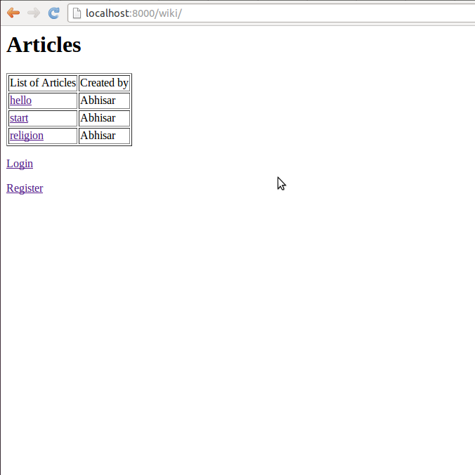
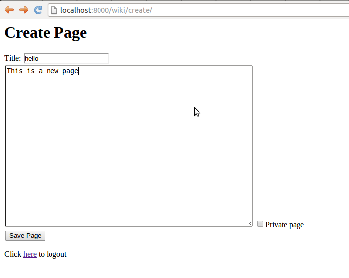
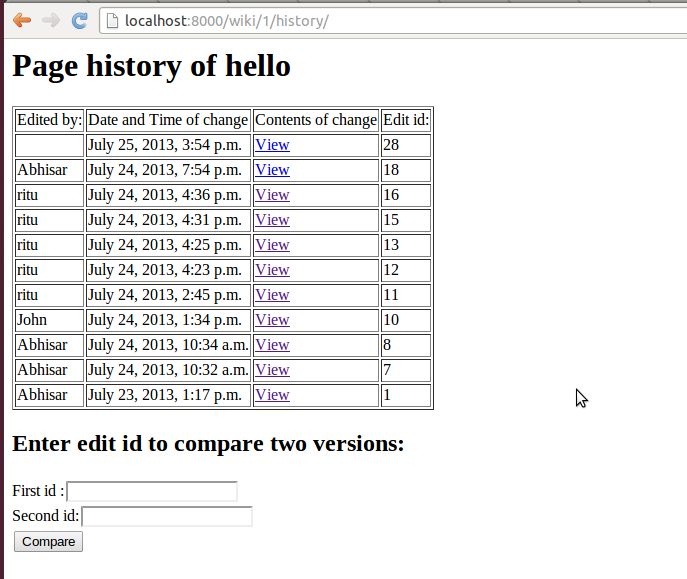

To start the wiki go to http://localhost:8000/wiki This would open up a page with the list of all public articles if a user is not loggedin and a list of all public and private articles if a user is logged in. You can login directly from the homepage by clicking on the login option. Unregistered users can also register themselves by clicking on the registration link given on the page.
To create a page you need to login.Once you get logged in you get a option of creating a page.Click on create page to create a new page.
To create a private page select the private checkbox while creating the page.
Note
You can only make an existing page private if you are the owner of the page
To view the revision history go the article article page.Then click on the revision history link to see the list of all changes made.
In the revision history page of an article just select any two edit ids and click compare to see the changes or differences between two versions of the article.